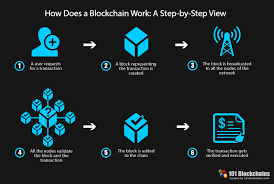
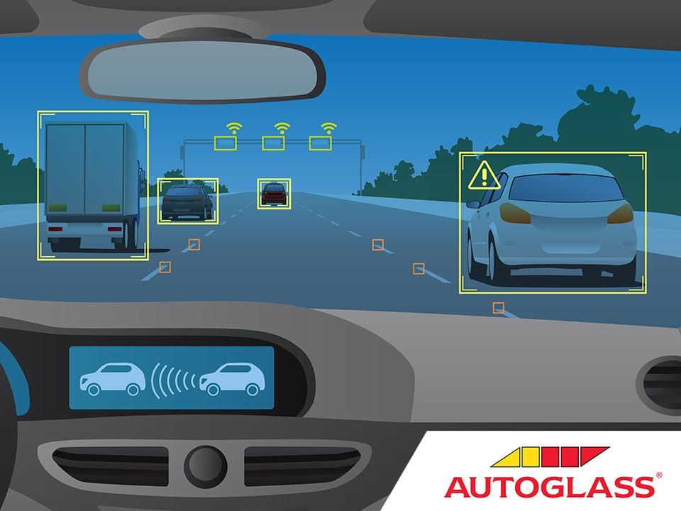
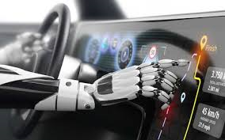
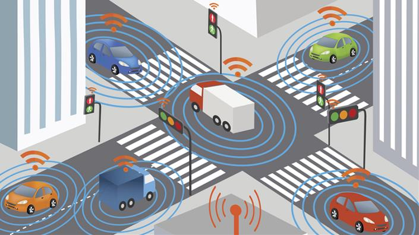

From a cruising altitude, a block chain might not look that different from things you’re familiar with, say Wikipedia.
With a block chain, many people can write entries into a record of information, and a community of users can control how the record of information is amended and updated. Likewise, Wikipedia entries are not the product of a single publisher. No one person controls the information.
Descending to ground level, however, the differences that make block chain technology unique become more clear. While both run on distributed networks (the internet), Wikipedia is built into the World Wide Web (WWW) using a client-server network model.
A user (client) with permissions associated with its account is able to change Wikipedia entries stored on a centralised server.
Whenever a user accesses the Wikipedia page, they will get the updated version of the ‘master copy’ of the Wikipedia entry. Control of the database remains with Wikipedia administrators allowing for access and permissions to be maintained by a central authority.

Autonomous Things
Autonomous Cars: The future of driverless car.Advanced driver assistance systems are becoming more and more commonplace in modern cars. ADAS or advanced driver assistance system is a collective term for the various technological enhancements present in many modern vehicles. These technologies aim to enhance and improve both driver and vehicle safety. Each advancement in ADAS brings us ever closer to the inevitability of fully autonomous cars.
As more auto manufacturers ready themselves to embrace the future of autonomous driving, the technologies that will eventually form the backbone of these systems are already in development today. If you are currently driving a modern car, there is a strong chance your car already has autonomous driving technologies such as collision mitigation braking, lane departure warning, blind spot warning or lane keeping assistance. These technologies, many commonplace, are key stepping-stones towards the fully driverless cars of the future. The race to dominate the autonomous vehicle market, which could be worth $26 billion (£21 billion) by 2025, is rapidly accelerating.



Immersive Experience
Immersive technology refers to technology that attempts to emulate a physical world through the means of a digital or simulated world, thereby creating a sense of immersion. AR adds digital elements to a real-world setting, often by using a smartphone’s camera.
Mainstream examples of augmented reality experiences include Snapchat lenses and the Pokemon Go mobile game, which places animated characters in a player’s live view.
VR, on the other hand, is a total immersive experience that shuts out the physical world. We provide a service that specialises in the medical field. By installing numerous cameras at different angles around an operating theatre to create a 360-degree view, medical students can wear a VR headset to immerse themselves in what can be a high-pressure environment to gain vital experience and feel more comfortable.
The footage is made available on a downloadable app and anyone with a VR headset can access a VR operation.